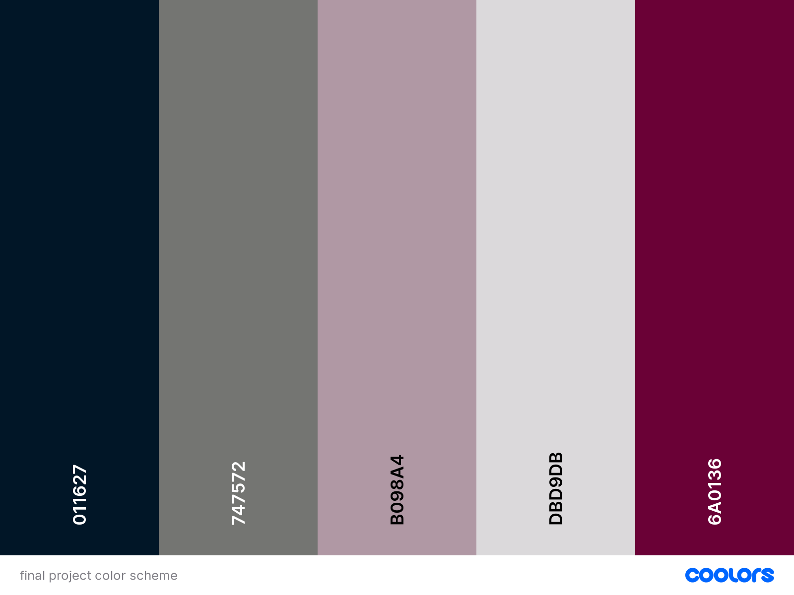

Topic:
My website will be about fashion trends in Fall/Winter 2023, including popular fashion styles as well as design and colors/material of clothes.
Audience:
My intended audience is people that are generally interested in fashion. However, anyone in the general public who wants to learn more about fashion can also view my website.
Design & Style:
The design of my website will be simple and organized, as the spacing of the images and text will mostly be consistent throughout the pages, without large variation. In my website, I will mainly use basic/neutral colors, such as black, gray, and white.
Color Palette:
Websites that inspired my design:
Scope:
I am planning to include 4 pages in my website, as listed below:
- A main page, which will discuss the major themes/keywords of F/W 2023 fashion trends
- A page about trending styles
- A page about popular fashion items
- A page about popular colors/material of clothes